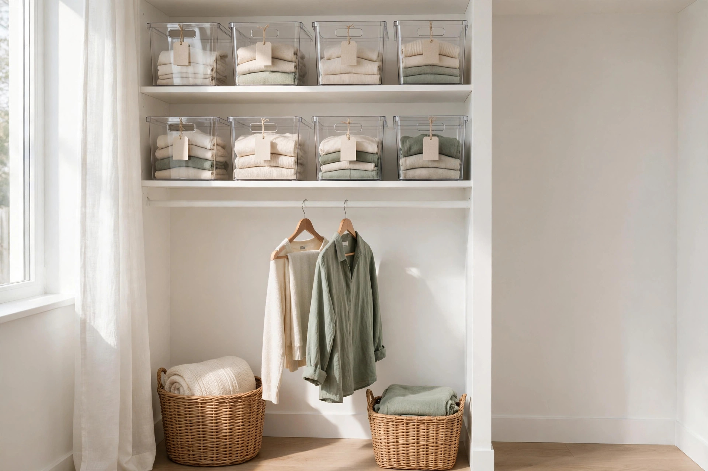
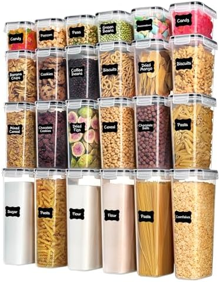
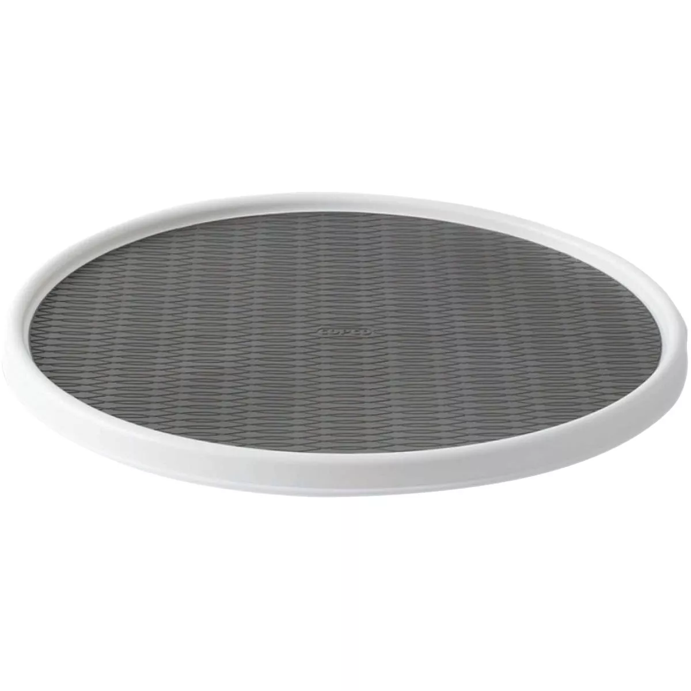
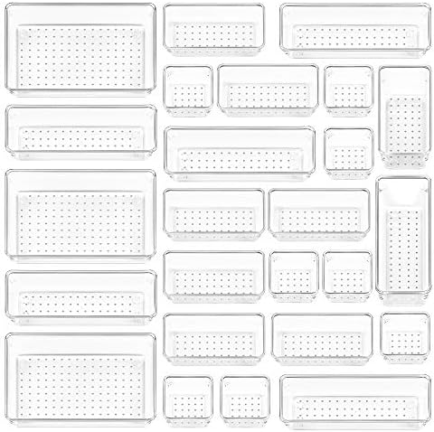
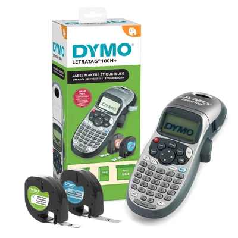

Home Organization Ideas

The room photo above is an AI-generated illustration of the look, not a photograph of the products listed below.
Organization is not a personality trait. It is a short list of containers, one label maker, and a routine you can keep. Start with one shelf. The system grows from there.
Here is the starter kit, the three systems, and the five pieces that do the heavy lifting.
The 7-piece starter kit
You do not need all seven at once. Start with any three and the room already reads tidy.
- One set of slim velvet hangers. Swap the closet's bulky plastic hangers for slim velvet ones and the rod gains room for ten more garments. Amazon Basics slim velvet hangers, 50-pack
- One set of airtight containers. The whole pantry in one box: 24 clear containers in four sizes, so flour, pasta and cereal stop living in half-open bags. Vtopmart 24-piece airtight containers
- One lazy Susan turntable. For the deep cabinet where jars get lost at the back. Spin, grab, done. Copco 18-inch lazy Susan
- One set of drawer organizers. Twenty-five clear trays in four sizes. One junk drawer at a time. Vtopmart 25-piece drawer organizers
- One label maker. Labels are what make a system stick. Without them, the bins drift back to chaos in a month. DYMO LetraTag 100H Plus
- One big basket per zone. Entryway, closet floor, laundry. A basket that is two-thirds full reads as storage; a dozen tiny ones read as clutter.
- A 15-minute Sunday reset. Clear the counters, empty the sink, start one load of laundry, plan the week. Fifteen minutes now, a calmer Monday.
Three systems that never miss
Every tidy home on our channel runs on one of these three. Pick the room that bothers you most and start there.
Closet system: one in, one out
Group clothes by type, not by color. Daily wear goes at eye level. One new item in, one old item out. Measure the rod before you buy anything; most closet failures are sizing mistakes.
Pantry system: clear bins and labels
One bin, one food type. Label the front, not the top. Measure the shelf before you buy. New stock goes behind the old. Decant into clear jars so you can see what is left without opening every container.
Reset system: 15 minutes on Sunday
Tidy is a routine, not a project. Fifteen minutes once a week beats one heroic weekend a year. Clear the counters, empty the sink, sweep the floors, start one load of laundry, plan the week ahead.
Shop the look
Some links on this page are affiliate links. If you buy through them, Home Organization Ideas may earn a commission at no extra cost to you. We only list pieces we would put in our own pins.
Vtopmart 24-piece airtight food storage containers, black lids: the whole pantry in one box

Twenty-four clear containers in four sizes with four-side locking lids and a silicone seal, plus 24 reusable labels. The most-pinned pantry format there is, and Vtopmart is the volume leader in it. On Amazon it holds 4.7 out of 5 stars from more than 28,000 ratings.
Copco 18-inch lazy Susan turntable, white/gray: the deep-cabinet fix

The most-reviewed pantry turntable we found, with a non-skid surface and a raised rim so nothing slides off when it spins. Eighteen inches across, so measure the shelf first. On Amazon it holds 4.7 out of 5 stars from more than 55,000 ratings.
Vtopmart 25-piece clear plastic drawer organizers: the junk-drawer reset

Twenty-five clear trays in four sizes with non-slip pads, so they sit still when the drawer slams. Amazon's number one best seller in clothes drawer organizers, with 4.7 out of 5 stars from more than 49,000 ratings. The before-and-after drawer photo is the most saveable image in home organization.
DYMO LetraTag 100H Plus handheld label maker: labels make the system stick

Small, sleek and super portable, with five font sizes and seven print styles, and it prints on colored labels. It is also the most giftable piece on this page: a gadget, not a container, and the one that turns a pile of bins into a system. Includes the maker and two label cassettes.
Guides
The longer reads behind the pins. Short, and meant to be done tonight.
10-minute closet reset, tonight
Pull everything off one shelf. Let go of what you have not worn in a year. Group by type, not by color. Daily wear goes at eye level. One new item in, one old item out. Ten minutes, one shelf, done.
7 clear bin rules for a pantry that stays tidy
Label the front, not the top. One bin, one food type. Measure the shelf before you buy. Decant into clear jars. New stock goes behind the old. Daily items at eye level. Toss expired food every Sunday.
The 15-minute Sunday reset checklist
Clear the counters. Empty the sink. Sweep the floors. Start one load of laundry. Plan the week ahead. Fifteen minutes now, a calmer Monday.
Find us on Pinterest
Follow the boards for new organization ideas every week:
- Closet Organization Ideas
- Pantry & Kitchen Organization
- Declutter & Cleaning Checklists
Home Organization Ideas (@everydaytidy) on Pinterest
Contact
As an Amazon Associate I earn from qualifying purchases.